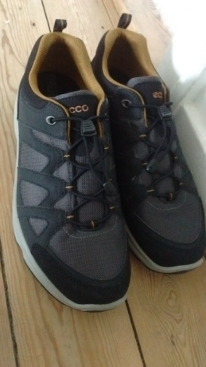

در باب زیبایی و آسودگی

زیاد راه میروم. به نوعی ورزش روزانهام است. آدمِ جیم رفتن نیستم. همچنین دویدن. فاصله خانه تا محل کارم همیشه مناسب پیادهروی بوده. اینجا -در دانمارک- هم همینطور است. پیادهروی البته کفش راحت و بادوام میخواهد. از سه چهار سال قبل که شروع کردم به پیادهروی روزانه آنقدر کفش پاره کردم یا به بهانه ناراحت بودن نپوشیدم که مریم خسته شد و یک روز دستم را گرفت و برد فروشگاه اکو. کفشهای راحت و بادوام و البته گران و با گارانتی یک ساله. حساب کرده بود هزینه کفشهای ارزانی که سالانه میخرم و پاره میکنم از هزینه خرید یک کفش اکو اگر بیشتر نباشد کمتر نیست.
کفش را خریدم و هفتهشت ماه بعد درزش کمی پاره شد. خیلی خوشحال شدم. رسید به دست رفتم برای تعویض کفش. از قبل آماده بودم جواب سربالا بشنوم. فروشنده، دخترک زیبا و بلندبالای دانمارکی، کفش را گرفت و به همکارش نشان داد و راحتتر از چیزی که فکر میکردم یک کفش جدید پیشنهاد کرد. توضیح داد که پاهای پَهنی داری و بهتر است مدل جدیدی بگیری مناسب شکل پاهایت. کفشی پیشنهاد کرد که در نگاه اول نپسندیدم. رنگ سیاهش را خواستم که در انبار نداشتند. چند تا کفش پوشیدم و آخرش برگشتم به همان کفش اول. پوشیدمش و لذت بردم از راحتیش. انگار پاهایم را بغل کرده بود. گفتم انتخابم همین است. هشدار داد که اول مطمئن شو ظاهرش را میپسندی و دوست داری، وگرنه الان میخری و هیچ وقت نمیپوشیاش. گفتم راحتی برایم مهمتر است و بعد خواستم برایش موضوع را باز کنم که پشیمان شدم. منبرش را اینجا برای شما میروم.
کفش مثل دوست است. حتی نزدیکتر. مثل همسر. مهم است که از ظاهرش متنفّر نباشی. اگر مثلاً شکل و شمایلی دارد که باعث ناراحتی یا خجالتت میشود، هیچ وقت نمیپوشیاش چون نمیخواهی کسی تو را با این کفش ببیند. بله بله میدانم نظر دیگران برایتان مهم نیست، ولی بدانید که -در مورد هر مسئله ظاهربینانهای- هست. حالا فرض کن کفشی بگیری آنقدر زیبا که از تماشایش سیر نشوی اما پایت را بزند. احتمالاً یکی دو ماهی به خاطر گل رویش تحمل کنی. شاید هم -به فرض نزدیک به محال- جا باز کرد و لبههای تیز و آزاردهندهاش نرمتر شد و پایت را کمتر اذیت کرد. شاید هم پوست پایت کلفتتر شد و کمتر تاول زد. همه اینها به جای خود ولی یادت نرود تو بیشتر از اینکه کفش را ببینی، میپوشی. فرصت تماشای زیبایی خیرهکننده کفش جدیدت آنقدرها هم که فکر میکنی زیاد نیست. ضمن اینکه همیشه کفشهای جدیدی هست زیباتر از کفشی که پایت را میزند.
حالا فرض کن کفشی بگیری نرم و راحت که پاهایت را هر لحظه نوازش میکند. اگرمثل من بالای سی و پنج سال باشی کفشت را هر روز زیبا و زیباتر میبینی. هر روز با خوشحالی می پوشیاش. مراقبش هستی. گوشهاش هم اگر پاره شد همهٔ تلاشت را میکنی که درستش کنی. مثل اولش هم نشد نشد. کاری به حرف دیگران هم نداری. چون هیچکس نمیتواند حال خوشت را بفهمد. حالِ پاهایی که هیچ وقت تا این اندازه احساس آرامش و آسایش نداشته.
پ.ن. هر کَس از مقایسه همسر (زن یا شوهر) با کفش ناراحت شود خَر است!